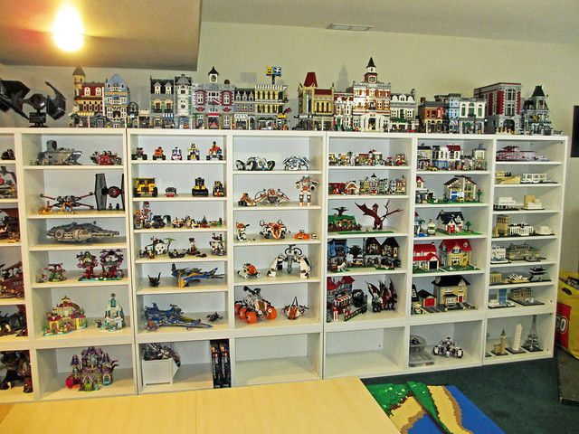
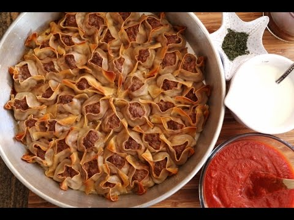
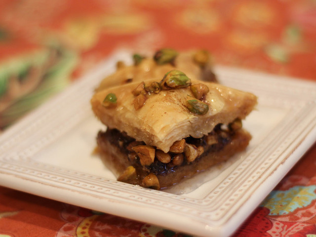

My Hobbies
Video Games


I enjoy playing video games, especially fihgting games and strategy games.
Camping
Camping is one of my favorite outdoor activities to relax and connect with nature. Fun fact, I am an Eagle Scout and the picture is me getting my rank.
Legos
Building with Legos is both fun and a great collection of mine.
Cooking
 Cooking is another passion of mine, and I love experimenting with new recipes. Here are my two favorite foods from my country Armenia: Manti and Baklava